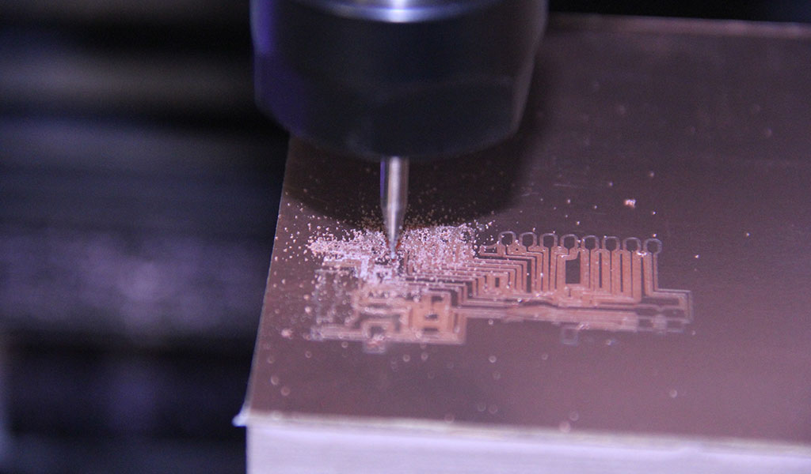

Assignment 10
The Assignment for week 10 was to design a circuit to take advantage of an output device and I chose to create a display for my hot box. I will work on connecting an LCD screen to my lab made arduino clone first so that I can have an easy to read display of what is going on in the compartment of the hot box. I settled on a generic 16x2 ic2 LCD display. My goal is to have it display the hotbox temp providing a more stable reading of the actual temperature in the box. The sensor on the control module controling the heat source is actual in line with the fan to help keep the fan/heater from running constantly while it is pre-heating the box. The LM34 sensor will desplay the actual temp - once the box is preheated these sensors should read the same (within the margin of error.
LCD Sceen and add on board to connect with 4 wires
The screen I used is simple IC2 Display. It will have two lines of text availabe with each line able to "print" 16 characters per line. My hope is to have it read "Hot Box Temp" on the first line and display the degrees on the second line.

Arduino code that will allow my board to display text
After completing my lab created arduino board I needed to start looking at how the lcd screen actually connected to my circuit. The display has four wires that need to be connected. The SCL pin will connect to A5. The SDA pin will connect to A4. The VCC pin will connect to the 5v pin and the GND will connect to the GND on the board. The only other variable is the contrast on the back of the LCD allow to dial in brightness. After getting the wires connected to the board I was able to connect the ground, 5V, A4 and A5 pins to the Arduino to write my code.
When writing code for the LCD screen you need to include libraries that will allow your board to communicate with your LCD. In this instance you will need to include the LiquidCrystal and wire.h libraries. I searched the web and was able to locate the needed library for my lcd and install it. The process for doing this is quite simple. All you need to do add the zip file by going to sketch->Include library->Add zip library. After that was done I began writing the code for the lcd and upload it.
I was initially able to upload the code to my arduino but was not able to see the printed text on my LCD. After some research I found out that you need to have the correct address on the initial set up. My code was set to 0x27. I found some basic code that allows you to locate the address in the serial monitor. I uploaded the code and found out that my LCD address was 0x3F instead of 0x27. I edited the code and was able to upload a basic Hello World lcd sketch. I modified the lines to read Jeffs snowboard hotbox to make sure that I was understanding the coding. In arduino you need to tell the LCD which line you want to print to and which character to start on. Now that I was able to display text on my LCD.

Once I was able to locate the correct address for my LCD it was a simple fix. I was able to change the text that my LCD was printing to read "Snowboard Hotbox" on the first line and "Jeffs Board" on the second line. SUCCESS!!!
LCD readout codeFor my final project will need to get both of my input and output devices working together in the same code so that I can monitor the system with one look. Right now I am loading either the sensor or the LCD code in order to read them. Mixing the two shouldn't be too difficult as I am pretty sure it is as simple as telling the chip to "print" what the sensor is reading.
UPDATE:
After Discussing this assigment with Terance I have decided to mill my own board. I have based my design off of the Satshakit found on the Fab Academy Archive site. I modified some of the traces on the schematic to allow for a better end result when milling. Some of the traces did not mill out correctly. From what I can tell they were too close for my machine to identify as seperate traces. After setting up our Tormach 440 mill and running the PCB board I was able to stuff it and bootload the program using the directions on the Satshakit site tutorial to have it run as an Arduino Uno commercial board
This is StoneWork, a free, fully standards-compliant CSS template designed by TEMPLATED. The photos in this template are from Fotogrph. This free template is released under the Creative Commons Attribution license, so you're pretty much free to do whatever you want with it (even use it commercially) provided you give us credit for it. Have fun :)